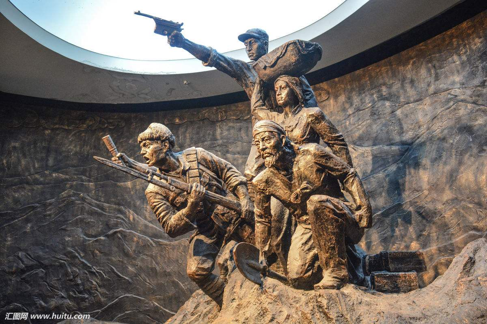

The old revolutionary base areas of China are referred to as old revolutionary base areas or old revolutionary base areas, which refer to the revolutionary base areas established under the leadership of the older generation of proletarian revolutionaries such as the communist party of China and MAO zedong during the agrarian revolutionary war and the Anti-Japanese War



President xi jinping pointed out that the people of the old and the old areas
have made great sacrifices and contributions to the Chinese revolution led by our party.
These sacrifices and contributions are forever inscribed on the historical monuments of the communist
party of China, the people's liberation army and the People's Republic of China.
We should cherish and always bear in mind these sacrifices and contributions of the people of the old and
the old regions, and carry forward the glorious traditions of the people of the old and the old regions,
We will make unremitting efforts to realize the "two centenary goals" and the Chinese dream of national rejuvenation.
President xi then posed four questions to the city and county party secretaries attending the meeting:
How to adapt to the new normal of economic development and catch the development of county economy? How to combat poverty
alleviation and development and speed up the improvement of people's lives in old areas?
How can the county level play an active role in comprehensively deepening reform and how can they use the rule of law
thinking and approach to promote their work?
How to inherit and carry forward the glorious tradition of the old district, strengthen and improve the party building?
President xi jinping wants everyone to speak freely on these issues and speak out their deepest and truest thoughts.
Since the 18th national congress of the communist party of China (CPC), President xi jinping has made many visits to poverty-stricken areas.
From luotuwan village of fuping county, hebei province, and gujiatai village, deep in taihang mountain, to yuangudui village of weiyuan county,
gansu province, and bulengou village of dongxiang county,To xiangxi tujia miao autonomous prefecture 18 holes village..
The general secretary has always stressed that leading cadres should look at the real poor, support the real poor and help the real poor.
At the symposium, President xi jinping further focused on the task of tackling poverty in the old revolutionary base areas.
It is pointed out that some old areas are still facing serious problems of backward development, backward infrastructure and low living standards.
In particular, there are still a large number of rural poor in the old areas, we must always bear in mind.
“We have achieved the first centennial goal of building a moderately prosperous society in all respects, and there is no such thing as a moderately prosperous society in all respects in the old areas.
In particular, it is not complete without the poor living in the old areas. This is what I often say is not well off,
the key to look at the meaning of fellow villagers." President xi jinping said.
It is an important way to get rid of poverty and get rich by making good use of the old revolutionary base areas'
own resource advantages and developing characteristic industries.

The people are the masters of the country
The symmetry of the extensive poverty alleviation is the pointer to the environment of different poverty areas.Accurate identification of poverty alleviation objects by scientific and effective procedures according to different conditions of poor peasant households.
President xi jinping said: cadres and the masses of all ethnic groups should cherish national unity as much as they cherish their own eyes, and value national unity as much as they cherish their own lives,xi said： national unity is the lifeblood of people of all nationalities...